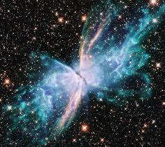

|

Yıldızların Doğumu: Nebulalar
Yıldızların doğumu, evrenin en büyüleyici süreçlerinden biridir ve bu süreç nebula adı verilen dev gaz ve toz bulutlarında başlar.
Nebulalar, uzayda dağılmış halde bulunan hidrojen, helyum ve çeşitli elementlerden oluşan devasa bulutlardır. Bu bulutlar genellikle ölü
yıldızların patlamasıyla uzaya saçılan madde kalıntılarından meydana gelir.
Zamanla, bu bulutların içindeki madde kütle çekiminin etkisiyle yoğunlaşmaya başlar. Yoğunlaşma arttıkça bulutun belirli bir bölgesinde sıcaklık
ve basınç da yükselir. Bu bölgeye ön yıldız (protostar) denir. Ön yıldız büyümeye devam ettikçe merkezinde sıcaklık milyonlarca dereceye ulaşır ve
sonunda nükleer füzyon başlar. Bu an, yıldızın gerçek doğumudur — artık o bir yıldızdır ve kendi ışığını üretmeye başlamıştır.
Nebulalar sadece yıldızların doğum yerleri değildir; aynı zamanda gezegenlerin, uyduların ve diğer gökcisimlerinin de oluştuğu alanlardır. Yeni doğan
yıldızların çevresinde dönen gaz ve toz diskleri zamanla birleşerek gezegen sistemlerini oluşturur.
En ünlü nebulalardan biri Orion Bulutsusu’dur. Bu bölge, Dünya’dan çıplak gözle bile görülebilen, yıldız doğumlarının halen devam ettiği dev bir yıldız
fırınıdır.
Kısacası, nebulalar evrenin beşikleridir. Yıldızların doğduğu, hayatın kimyasal temellerinin oluştuğu bu dev bulutlar, kozmik döngünün başlangıç noktasıdır.
|